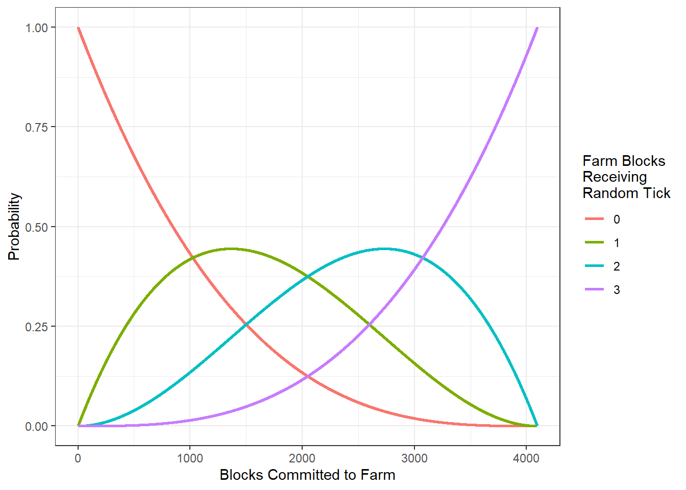

2 Growth Related Tick Mechanics
Timed mechanics in Minecraft are operated on a tick system.
A game tick is where Minecraft’s game loop runs once. The game normally runs at a fixed rate of 20 ticks per second, so one tick happens every 0.05 seconds (https://minecraft.fandom.com/wiki/Tick#Game_tick)
Whereas this document is focused in growth mechanics, no time will be spent discussing the many operations performed in a tick. The reader is encouraged to refer to the Minecraft wiki for more details about ticks.
The operation of a tick that is of interest to this document is the random tick. A random tick is not a unit of time, as is the case with a tick, but is the assignment of an attribute or state to a randomly selected block. A selected block is said to “receive a random tick.”
Minecraft worlds are subdivided into chunks, or vertical columns that are each 16 blocks square.
Chunks consist of one subchunk per 16 blocks of height, each one being a 16 × 16 × 16 = 4096 block cube. Sections are distributed vertically starting at the lowest y level. Every chunk tick, some blocks are chosen at random from each section in the chunk. The blocks at those positions are given a “random tick”.
In Java Edition, the number of blocks chosen from each section is specified by /gamerule randomTickSpeed (defaults to 3), and one block can be chosen multiple times in one chunk tick. (https://minecraft.fandom.com/wiki/Tick#Random_tick)
2.1 Probability of Random Tick Assignment
Mathematically speaking, the blocks chosen to receive a random tick are randomly selected with replacement from the allotment of 4,096 blocks. Based on this information, the probability that any single block is chosen for a random tick within any chunk tick is
\[ \Pr(RTick) = \frac{3}{16 \cdot 16 \cdot 16} = \frac{3}{4096} \approx 7.3242188\times 10^{-4} \]
In practice, however, it is rare to utilize a farm consisting of only a single block of farm land. Producing large quantities of a crop typically requires utilizing many blocks of farmland. The total crop yield, then, is conditioned on the number of blocks designated for crop growth; when more blocks are assigned to farm land, the probability of any of the farm land blocks being assigned a random tick increases. Specifically, the number of blocks of farm land receiving a random tick follows a Hypergeometric distribution.
The Hypergeometric probability distribution function takes the form
\[ \Pr(F_r = x | F) = \frac{{F \choose F_r} {N - F \choose rts - F_r}}{{N \choose rts}} \]
Where
- \(F_r\) = the number of blocks of farmland assigned a random tick. \(0 \leq F_r \leq rts\).
- \(F\) = the number of blocks of farmland in the chunk
- \(N\) = the number of blocks in a chunk (16^3)
- \(rts\) = the random tick speed (3, by default)
For comparison, we may use this formula to calculate the probability of a single piece of farmland inside a chunk receiving a random tick.
\[ \Pr(F_r = 1 | F = 1) = \frac{{F \choose F_r} {N - F \choose rts - F_r}}{{N \choose rts}} = \frac{{1 \choose 1} {16^3 - 1 \choose 2}}{{16^3 \choose 3}} = 7.3242188\times 10^{-4} \]
Of note, when only a single block is dedicated to farm, the probability of that block receiving the random tick is identical to the more basic calculation. What the hypergeometric model gives us, then, is a more generalized focus away from “did this block receive a random tick” and toward “how many blocks of the farmland received a random tick.”
The following table shows the probability of zero, one, two, or three blocks within a farm receiving a random tick for farms ranging in size from one block to ten blocks. Notice that in the column for 1 block receiving a random tick (Fr = 1), the probability steadily increases as the number of farm blocks increases. This is intuitive, as we would expect a higher probability of one block being assigned a random tick if we have more opportunities for assignment.
| Farm Blocks | Pr(Fr = 0) | Pr(Fr = 1) | Pr(Fr = 2) | Pr(Fr = 3) |
|---|---|---|---|---|
| 1 | 0.9992676 | 0.0007324 | NA | NA |
| 2 | 0.9985355 | 0.0014641 | 4.00e-07 | NA |
| 3 | 0.9978038 | 0.0021951 | 1.10e-06 | 0 |
| 4 | 0.9970725 | 0.0029254 | 2.10e-06 | 0 |
| 5 | 0.9963415 | 0.0036550 | 3.60e-06 | 0 |
| 6 | 0.9956108 | 0.0043838 | 5.40e-06 | 0 |
| 7 | 0.9948806 | 0.0051119 | 7.50e-06 | 0 |
| 8 | 0.9941506 | 0.0058394 | 1.00e-05 | 0 |
| 9 | 0.9934211 | 0.0065661 | 1.29e-05 | 0 |
| 10 | 0.9926919 | 0.0072921 | 1.61e-05 | 0 |
We can extend this concept into the plot below which illustrates how the probabilities of one, two, and three blocks receiving a random tick increase as we assign more blocks in a sub-chunk to farming. One of the interesting features of this plot is that the probability of one block receiving a tick is not monotonic; it begins to decrease and returns to zero. Again, this is intuitive; if we assign the majority of the blocks to farm land, it becomes more likely that either two or three blocks receive the random tick. If all 4,096 blocks are assigned to farmland, all three random ticks are assigned to a farm block, pushing \(\Pr(Fr = 1)\) to 0.

2.2 Time To Random Tick
The Time to Random Tick (TTR) is a measure of how much time passes between a block receiving random ticks. Because these times are based on game mechanics, they are constant and uninfluenced by the specific mechanics of any crop.
Basic Probabilistic Farming shows that the mean TTR (\(TTR_{\mu}\)) can be calculated as the mean of a geometric distribution with distribution parameter \(p = \Pr(RTick)\). The probability of a random tick takes a slightly different meaning when we increase the farm size. In this context, we assign \(p = \Pr(Fr >= 1 | F)\), giving
\[ TTR_\mu = \frac{1}{\Pr(RTick | F)} \] The table at the end of this section shows the \(TTR_\mu\) for farm sizes from one to ten blocks.
The median TTR, denoted \(TTR_M\), gives the median time between random tick assignments. Fifty percent of random ticks will be assigned in less time that \(TTR_M\) and fifty percent will be assigned in more than \(TTR_M\). Because the Geometric distribution is a right skewed distribution, the median is somewhat lower than the mean. It follows, then, that \(TTR_M < TTR_\mu\). Calculations of crop yield will differ depending on whether the calculations are based on \(TTR_M\) or \(TTR_\mu\), with \(TTR_\mu\) being more conservative (lower).
\[ TTR_M = \frac{-1}{log_2(1 - \Pr(RTick | F))} \]
It is also possible to calculate various quantiles of TTR, denoted \(TTR_p\). The formulae for these equations are not simple, but computer algorithms exist that can efficiently produce these results. This document uses R software to calculate quantiles when needed.
2.3 Table of Calculated Values
This table shows the \(TTR_\mu\) and \(TTR_M\) for farms ranging in size from one to ten blocks. The values calculated for a farm of one block are equal to the calculations made in Basic Probabilisitic Farming. As expected, the \(TTR\) decreases as more farm blocks are added.
The utility of these values may be somewhat limited. The calculations are based on the probability of at least one random tick being assigned within the farm, but is agnostic to whether it was one random tick, two random ticks, or three random ticks. We would rightfully anticipate that more random ticks would imply greater opportunity for crop growth. These values, then, suggest the frequency at which we may anticipate crop growth, but do not necessarily give an indication of how much crop growth will occur.
| Farm | \(Pr(RTick; F)\) | \(TTR_\mu\) | \(TTR_M\) |
|---|---|---|---|
| 1 | 0.0007324 | 1365.3333 | 946.03033 |
| 2 | 0.0014645 | 682.8334 | 472.95740 |
| 3 | 0.0021962 | 455.3335 | 315.26642 |
| 4 | 0.0029275 | 341.5835 | 236.42092 |
| 5 | 0.0036585 | 273.3336 | 189.11362 |
| 6 | 0.0043892 | 227.8337 | 157.57542 |
| 7 | 0.0051194 | 195.3337 | 135.04814 |
| 8 | 0.0058494 | 170.9588 | 118.15267 |
| 9 | 0.0065789 | 152.0005 | 105.01175 |
| 10 | 0.0073081 | 136.8339 | 94.49901 |